Busca tu moto por estilo
Catálogo
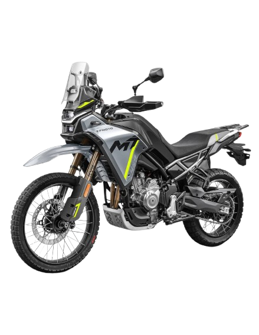
CFMoto 450MT - Especificaciones Técnicas
| Motor | 449.5 cc, DOHC, 4 válvulas, refrigerado por líquido |
|---|---|
| Potencia | Aprox. 49 HP a 9000 rpm |
| Transmisión | 6 velocidades |
| Tipo | Motocicleta tipo naked / trail |
| Neumáticos | Delantero: 110/80-R19 | Trasero: 130/80-R17 |
CFMoto 675NK - Especificaciones Técnicas
| Marca | CFMoto |
|---|---|
| Modelo | 675NK |
| Cilindrada | 675 cc |
| Tipo de Moto | Naked |
| Año de Fabricación | 2022 - 2024 (aprox.) |
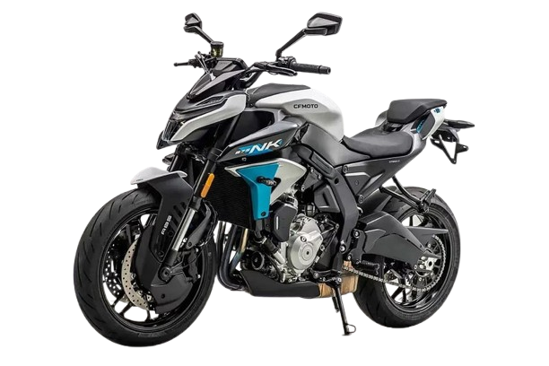
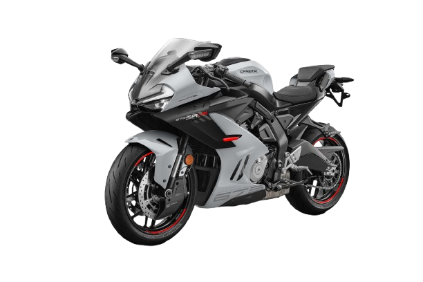
CFmoto 675SR-R - Especificaciones Tecnicas
| Marca | CFMoto |
|---|---|
| Modelo | 675SR-R |
| Cilindrada | 675 cc |
| Tipo de Moto | Superportiva / Deportiva |
| Año de Fabricación | 2024 (aprox.) |
Ducati Diavel V4 - Especificaciones Tecnicas
| Modelo | Diavel V4 |
|---|---|
| Motor | V4 Granturismo 1158 cc |
| Potencia | 208 CV a 10,750 rpm |
| Peso | 203 kg (en seco) |
| Tipo de Moto | Cruiser / Muscle Bike |
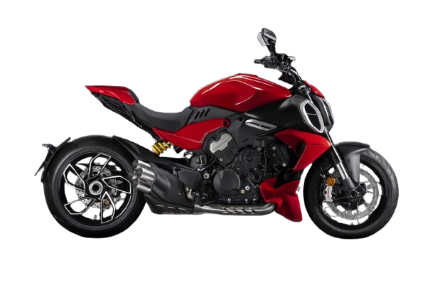
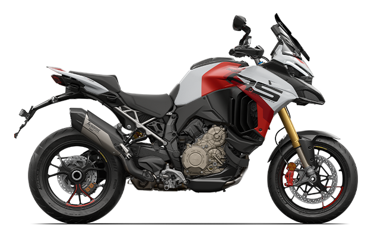
Ducati Multistrada VS4 - Especificaciones Tecnicas
| Tipo | Adventure Touring |
|---|---|
| Motor | V4 Granturismo de 1,158 cc |
| Potencia | 170 CV a 10,750 rpm |
| Neumáticos | 19" delantero / 17" trasero (diseño radial) |
| Electrónica | Control de tracción, ABS, modos de conducción, pantalla TFT |
Ducati Panigale V2 - Especificaciones Tecnicas
| Motor | V2 de 959 cc |
|---|---|
| Potencia | 155 hp a 10,750 rpm |
| Peso | 173 kg (en seco) |
| Tipo de Moto | Superbike / Deportiva |
| Año de Lanzamiento | 2019 |
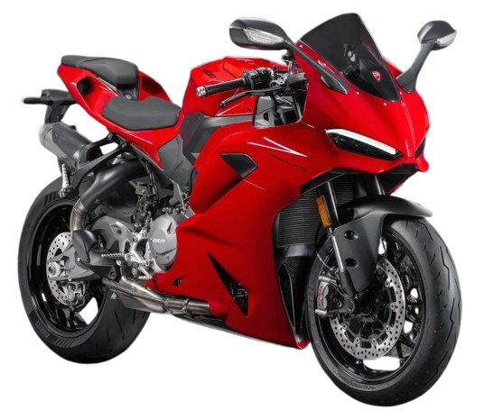
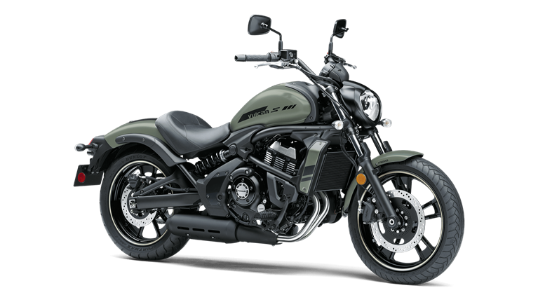
Kawasaki Vulca S - Especificaciones Tecnicas
| Motor | Bicilíndrico en paralelo, 4 tiempos, DOHC, refrigeración líquida |
|---|---|
| Cilindrada | 649 cc |
| Potencia | 61 cv |
| Peso | 229 kg |
| Frenos y ABS | Disco delantero 300 mm (doble pistón) y trasero 250 mm (un pistón), con ABS |
Kawasaki Ninja H2R - Especificaciones Tecnicas
| Motor | 4 tiempos, 4 cilindros en línea, DOHC, 16 válvulas, sobrealimentado |
|---|---|
| Potencia | 310 HP (314 CV) @ 14,000 rpm |
| Par máximo | 165 Nm @ 12,500 rpm |
| Velocidad máxima | 331 km/h (solo en circuito cerrado) |
| Peso | 216 kg (en seco) |
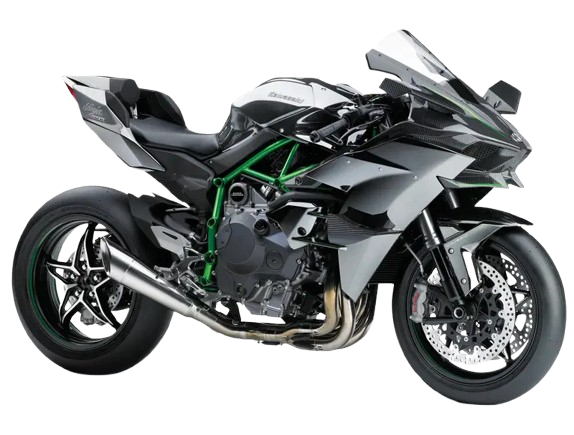
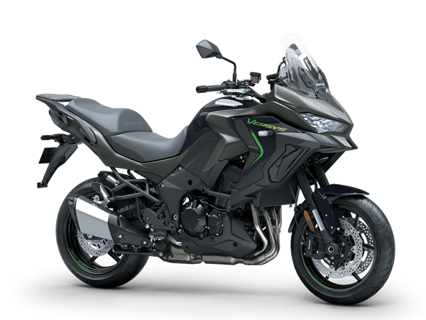
Kawasaki Versys 1100 - Especificaciones Tecnicas
| Motor | 4 cilindros en línea, 4 tiempos, refrigeración líquida |
|---|---|
| Cilindrada | 1.099 cc |
| Potencia | 135 CV |
| Peso | 255–259 kg (según versión) |
| Tipo | Maxitrail asfáltica orientada a viajes largos |
Suzuki DR Z4SM - Especificaciones Tecnicas
| Motor | Monocilíndrico, 4 tiempos, DOHC, refrigeración líquida |
|---|---|
| Cilindrada | 398 cc |
| Potencia | 38 CV |
| Peso | 154 kg |
| Tipo | Supermotard |
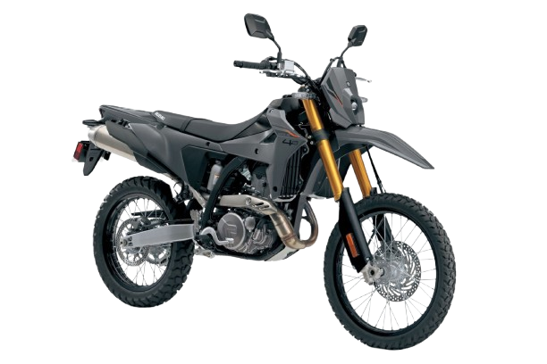
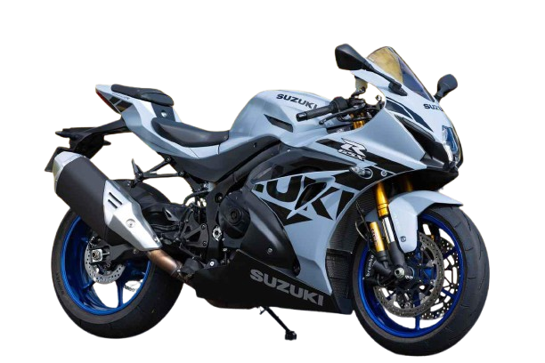
Suzuki GSX R1000R - Especificaciones Tecnicas
| Motor | 4 cilindros en línea, 4 tiempos, DOHC, refrigeración líquida |
|---|---|
| Cilindrada | 999 cc |
| Potencia | 199 CV (147 kW) @ 13,200 rpm |
| Peso | 203 kg (en orden de marcha) |
| Tipo | Superbike deportiva homologada para carretera y circuito |
Suzuki GSX S950- Especificaciones Tecnicas
| Motor y cilindrada | 4 cilindros en línea, 999 cc, refrigeración líquida (DOHC) |
|---|---|
| Potencia disponible | 70 kW o versión limitada a 35 kW (compatible con carné A2) |
| Par máximo | 76 Nm |
| Suspensión delantera | Horquilla invertida Kayaba de 43 mm |
| Iluminación | Grupo óptico LED con diseño de elementos superpuestos |
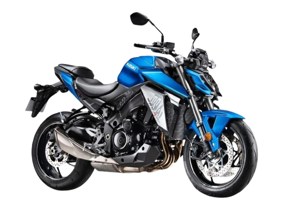
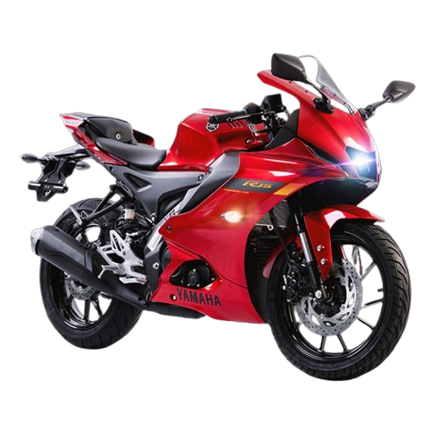
Yamaha YZF R15 - Especificaciones Tecnicas
| ABS | Sistema de frenos antibloqueo para mayor control y seguridad |
|---|---|
| Motor | Monocilíndrico de 155 cc con eficiencia y respuesta deportiva |
| Potencia | 19.3 HP a 10,000 RPM |
| Transmisión | Caja de 6 velocidades |
| Iluminación y diseño | Faro LED bifocal central y carenado inspirado en la YZF-R1 |
Yamaha FZ-X Connected - Especificaciones Tecnicas
| Motor | Monocilíndrico de 149 cc, 4 tiempos, con inyección electrónica (Fuel Injection) |
|---|---|
| Diseño | Estilo Neo-Retro inspirado en scrambler clásicas, con líneas robustas y modernas |
| Conectividad | Bluetooth integrado con la app Yamaha Motorcycle Connect para notificaciones y control |
| Consumo | Rendimiento aproximado de 130 km por galón, ideal para uso urbano |
| Seguridad | Frenos de disco con ABS monocanal y suspensión delantera telescópica |
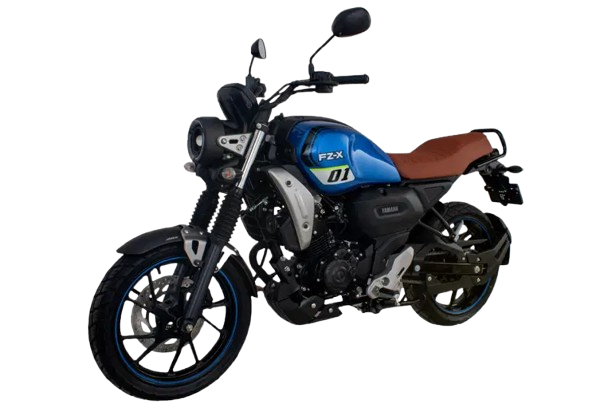
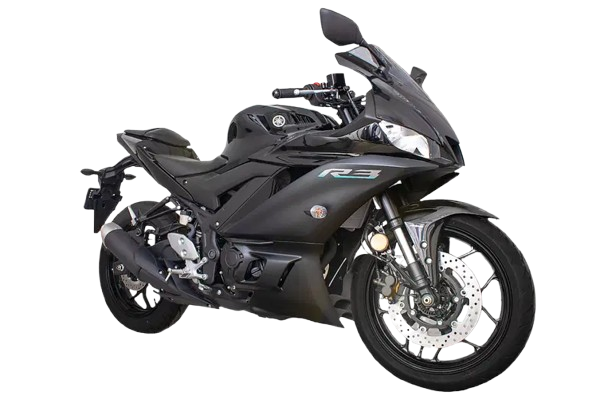
Yamaha YZF R3 - Especificaciones Tecnicas
| Motor | Bicilíndrico en línea de 321 cc, refrigerado por líquido |
|---|---|
| Potencia | 42 HP aprox. a 10,750 rpm |
| Transmisión | Caja de 6 velocidades |
| Seguridad | Sistema de frenos ABS de serie |
| Diseño | Carenado aerodinámico inspirado en la YZR-M1 de MotoGP |